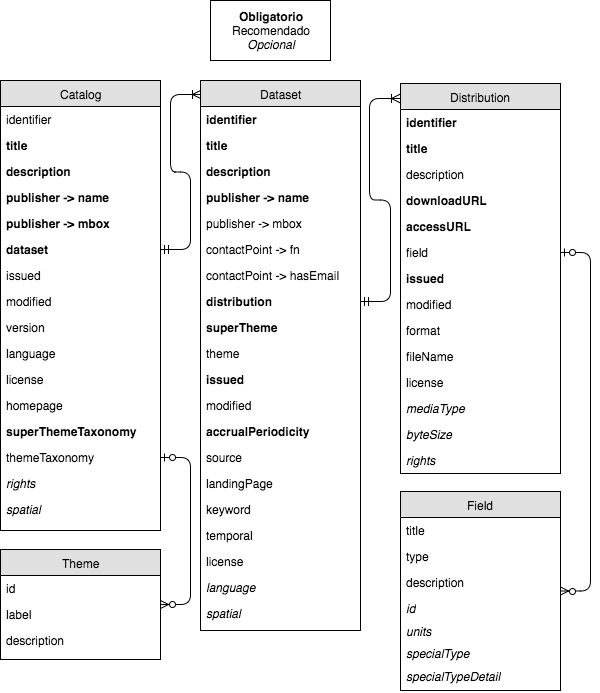

Guía para el uso y la publicación de metadatos del Gobierno de la Ciudad Autónoma de Buenos Aires
Introducción
Esta es una guía de recomendaciones y buenas prácticas, para el uso y la publicación de metadatos que adopta el Gobierno de la Ciudad Autónoma de Buenos Aires.
Las recomendaciones se basan en la guía del Gobierno Nacional, en estándares usados a nivel nacional e internacional y en la experiencia de trabajo del equipo de la Dirección General de Gobernanza de Datos de la Subsecretaria de Innovación Administrativa, dependiente de la Secretaría de Innovación y Transformación Digital (en adelante, TecBA) del Gobierno de la Ciudad Autónoma de Buenos Aires.
Esta es una guía colaborativa y en constante progreso. Valoramos, y alentamos, a organizaciones y ciudadanos a plantear ideas, sugerencias, y comentarios que ayuden a mejorar este documento.
¿Qué son los metadatos?
Los metadatos son los elementos descriptivos que dan contexto a un conjunto de datos, y acercan al usuario la información necesaria para entenderlos y usarlos.
Un título y una breve descripción son los metadatos básicos que cualquier conjunto de datos a publicar debería tener.
Otros elementos que ayudan al lector a hacer un buen uso de los datos, por ejemplo, pueden ser:
-
Nombre, tipo de datos y descripción de los campos: ¿qué significa cada campo? ¿qué datos puedo encontrar en esa columna? ¿qué dicen y qué no dicen esos datos, cómo debo leerlos?
-
Palabras clave: clasifican a un conjunto de datos como perteneciente a un conjunto de tópicos.
-
Tema: clasifican a un conjunto de datos como perteneciente a un determinado tema, dentro de una jerarquía temática.
-
Fecha de publicación: ¿cuándo se publicó por primera vez este conjunto de datos?
-
Fecha de última modificación: ¿cuándo se actualizó por última vez este conjunto de datos?
-
Frecuencia de actualización: ¿cada cuánto tiempo se actualiza este conjunto de datos?
-
URL de descarga: ¿cómo dispongo de los datos, desde dónde puedo descargarlos?
Una lista curada de campos de metadatos, junto con las instrucciones de cómo deben utilizarse, define un perfil de metadatos.
En esta guía describimos el perfil de metadatos recomendado para los catálogos del Gobierno de la Ciudad Autónoma de Buenos Aires y cómo publicarlo. De esta manera, todos los componentes de metadatos descriptos están presentes en todos los conjuntos de datos publicados en el portal BA Data.
¿Cómo se publican los metadatos?
La publicación de los metadatos puede ser muy diversa en detalle, calidad y forma. Una publicación muy elemental es un documento de texto que ofrece una descripción del conjunto de datos y de cada uno de los recursos que lo componen. Es posible ver un ejemplo textual de los metadatos de un catálogo de datos en el Anexo VI - Ejemplo de metadatos como texto.
Sin embargo, las computadoras no pueden leer fácilmente documentos de texto. La organización sistemática de colecciones de conjuntos de datos (es decir, la creación de un catálogo de datos) exige un nivel de complejidad mayor para facilitar su descubrimiento, indexación, y reutilización por parte de scripts y aplicaciones de todo tipo.
La potencial reutilización de los conjuntos de datos dependerá de la calidad de sus metadatos. Por lo tanto, la lectura e interpretación de los conjuntos de datos mejora cuando se adoptan y/o desarrollan estándares y vocabularios controlados.
Denominaciones y características del catálogo de datos
A continuación, se detallan las características de los estándares y vocabularios controlados adoptados para catálogos de datos, datasets y distribuciones.
Cada entidad del Gobierno de la Ciudad Autónoma de Buenos Aires tendrá publicados los metadatos de sus conjuntos de datos en un archivo data.json. Este archivo estará construido respetando los lineamientos establecidos en el Perfil de Metadatos tal como se lo describe más adelante en la sección Campos del perfil, tal como se puede ver en el ejemplo del Anexo VI - Ejemplo de data.json
Estándar usado
El perfil de metadatos recomendado en esta guía es una adaptación realizada por el equipo de Datos Abiertos del Gobierno Nacional utilizando como base el estándar DCAT - AP, usado por los países de la Unión Europea.
“DCAT” es un vocabulario controlado definido por la W3C (World Wide Web Consortium, organismo internacional encargado de desarrollar los estándares técnicos para la Web), ampliamente usado a nivel global para la descripción de catálogos de datos.
Según la W3C: "Mediante la utilización de DCAT para describir datasets en catálogos de datos, quienes publican aumentan la posibilidad de descubrimiento (discoverability) y permiten a aplicaciones informáticas consumir metadatos de manera simple desde múltiples catálogos. Además, permite la publicación descentralizada de catálogos y favorece la búsqueda federada de datasets a través de varios sitios”.
El perfil de metadatos propuesto para la Administración Pública Nacional se compone de 3 clases principales (Catalog, Dataset y Distribution) y 2 auxiliares (Field y Theme) que se relacionan según el siguiente esquema:

A continuación, describimos los metadatos que el data.json debe contener, para cada una de estas clases.
Campos del perfil
Catálogo (catalog)
El portal del Gobierno de la Ciudad Autónoma de Buenos Aires tendrá un catálogo con ciertos campos de perfil detallados más abajo.
Ejemplos de metadatos de un catálogo:
Metadatos necesarios para describir el catálogo, que un data.json debe contener:
| Nombre | Requerido | Descripción | Ejemplo | Variable (data.json) | Tipo (data.json) |
| Nombre | Sí | Nombre dado al catálogo. Debe ser claro, breve y lo suficientemente abstracto como para abarcar la multiplicidad de datasets que contiene. | Buenos Aires Data | title | String |
| Descripción | Sí | Descripción del contenido del catálogo. | Portal de Datos Abiertos del Gobierno de la Ciudad Autónoma de Buenos Aires | description | String |
| Autor | Sí | Responsable de la publicación del catálogo. | Secretaría General y Relaciones Institucionales - Gobierno de la Ciudad Autónoma de Buenos Aires | publisher -> name | String |
| Correo electrónico del autor | Sí | Correo electrónico de contacto del responsable de la publicación del catálogo. | gobiernoabierto@buenosaires.gob.ar | publisher -> mbox/td> | String |
| Datasets | Sí | Contiene una lista de los datasets que forman parte del catálogo. | [{...}, {...}] | dataset | Array |
| Fecha de creación o publicación | Recomendado | Fecha de última actualización/modificación del catálogo. Se escribe según el formato ISO-8601, tipeado como fecha simple o fecha con hora, con el mayor detalle posible que sea relevante para el dataset. | "2016-04-19T19:48:05.433640" para especificar fecha y hora "2016-04-19" para especificar fecha únicamente "2016-04-19T19:48:05.433640" para especificar fecha y hora "2016-04-19" para especificar fecha únicamente | modified | String |
| Autor | Sí | Responsable de la publicación del catálogo. | Secretaría General y Relaciones Institucionales - Gobierno de la Ciudad Autónoma de Buenos Aires | publisher -> name | String |
| Versión del perfil de metadatos | Recomendado | Es la versión del perfil de metadatos de la red de nodos de datos abiertos de la administración pública nacional de Argentina, utilizada en el catálogo. Se utiliza para que distintas aplicaciones reconozcan y validen los metadatos del catálogo, y las funcionalidades disponibles para distintos fines. | 1.1 | version | String |
| Idioma(s) | Recomendado | Lenguaje para la descripción de los metadatos de los datasets contenidos en el catálogo. Hay 2 estándares ISO que pueden ser utilizados para este campo: (a) ISO 639-1 (2 letras) (b) ISO 639-2/T (3 letras) es el más recomendado. Puede definirse 1 o más lenguajes en una lista. Link a los estándares ISO | ["es"] para un lenguaje ISO 639-1 ["spa", "eng"] para dos lenguajes ISO 639-2 | language | Array |
| Licencia | Recomendado | Indica la licencia bajo la cual todos los datasets y distribuciones del catálogo están disponibles mediante un enlace a la licencia o documento de la licencia seleccionada, o mediante el título textual de la licencia tal como aparece en la lista de http://opendefinition.org/licenses/. recomendamos usar la licencia "Open Database License (ODbL) v1.0". Un dataset o distribución que especifique una licencia diferente, sobreescribe a la licencia general del catálogo. | http://opendatacommons.org/licenses/dbcl/1-0/ si se utiliza un enlace "Open Database License (ODbL) v1.0" si se consigna el nombre de la licencia a utilizar | license | String |
| Página web del catálogo | Recomendado | Dirección web de acceso a la página principal del catálogo. Enlace a la página principal del catálogo. | http://data.buenosaires.gob.ar | homepage | String |
| Taxonomía temática global | Sí | Es el sistema de clasificación temática global del GCBA. Compone una lista de temas globales y está publicada en http://data.buenosaires.gob.ar/superThemeTaxonomy.json. | http://data.buenosaires.gob.ar/superThemeTaxonomy.json | superThemeTaxonomy | String |
| Taxonomía temática específica | Recomendado | Es el sistema de clasificación temática específica, creado por la organización responsable del catálogo. Compone una lista de temas específicos a los datasets del catálogo. Si se clasifica algún dataset del catálogo como perteneciente a uno o más temas, este campo es obligatorio ya que se debe explicitar una taxonomía temática para poder usar sus temas. | [{...}, {...}] | themeTaxonomy | Array |
| Derechos sobre el catálogo | No | Información sobre derechos aplicables al catálogo en el caso que no se hayan especificado en la licencia. Los datasets y sus distribuciones heredan la información sobre derechos aplicables al catálogo, a menos que especifiquen unos derechos distintos. | rights | String | |
| Cobertura geográfica | No | El área geográfica cubierta por el catálogo. Puede tomar valores: a) De comunas, barrios, fracciones censales o radios censales, según las recomendaciones de la Guía para la identificación y uso de entidades interoperables. b) Un área de coordenadas representada por latitud/longitud en el orden: minima longitud, mínima latitud, máxima longitud, máxima latitud. c) Un punto geográfico representado por latitud/longitud. ) Si la referencia geográfico no está identificada en la Guía para la identificación y uso de entidades interoperables indicar la URIs según geonames.org; ej : http://sws.geonames.org/6255146 | "ARG" es el código para la República Argentina. "06007" es el código de un departamento [-58.111111, -35.111111, -57.111111, -33.111111] es un bounding box [-58.111111, -35.111111] es un punto geográfico "http://sws.geonames.org/6255146" | spatial | String or Array |
Dentro de los metadatos necesarios para describir el catálogo en un data.json , hay que poner atención a los dos campos que contienen una lista de objetos: dataset y themeTaxonomy.
El primero contendrá una lista de objetos que describen (cada uno) los metadatos de los distintos datasets que componen el catálogo (en la próxima sección se describen los metadatos que debe contener cada uno de estos objetos).
El segundo también contiene una lista de objetos que, juntos, definen una taxonomía temática para el catálogo. Cada uno de estos objetos contiene los metadatos que describen a cada uno de los temas de esta taxonomía. Más adelante se describen estos metadatos en la sección Tema.
Conjunto de Datos (dataset)
A continuación, describimos los metadatos que se deben completar para describir un dataset a la hora de su carga o actualización en el catálogo.
Ejemplos de metadatos de un dataset:
Metadatos que el data.json debe contener, para describir a un dataset dentro de la lista contenida en el campo dataset del catálogo:
| Nombre | Requerido | Descripción | Ejemplo | Variable (data.json) | Tipo (data.json) |
| Identificador | Si | Identificador único del dataset, este identificador debe ser único para todo el catálogo. | Un identificador único para el dataset. La URI u otro identificador único en el contexto del catálogo, ejemplo: "dataset-ejemplo-35782” | identifier | String |
| Título | Si | Nombre asignado al dataset tal como será publicado. Debe ser claro y lo suficientemente abstracto como para abarcar la multiplicidad de distribuciones que contiene. Se recomienda no exceder los 100 caracteres en la mayoría de los casos. En caso de que un título más largo se juzgue necesario o relevante, este no deberá exceder los 200 caracteres. | Acceso a la información pública | title | String |
| Descripción | Sí | Descripción del contenido del dataset de un modo claro y conciso. Se recomienda no exceder los 500 caracteres en la mayoría de los casos. En caso de que una descripción más larga se juzgue necesaria o relevante, ésta no deberá exceder los 1500 caracteres. | Datos correspondientes a pedidos de acceso a la información pública solicitados al Gobierno de la Ciudad conforme a la Ley 104 | description | String |
| Autor | Sí | Responsable de la publicación del dataset. En el caso de organizaciones, detallar la estructura jerárquica separada por puntos, de manera jerárquicamente descendiente. Si la organización es parte del GCABA y se encuentra en el dataset Organigrama, deberá utilizarse la denominación allí documentada. | Ministerio de Gobierno. Subsecretaría de Reforma Política. Dirección General de Seguimiento de Organismos de Control y Acceso a la Información. | publisher -> name | String |
| Correo electrónico del autor | Recomendado | Correo electrónico de contacto del responsable de la publicación del dataset. | dgsocai@buenosaires.gob.ar | publisher -> mbox | String |
| Área/Persona de contacto | Recomendado | Área/persona de contacto que puede brindar información relevante sobre el dataset. | Ministerio de Gobierno. Subsecretaría de Reforma Política. Dirección General de Seguimiento de Organismos de Control y Acceso a la Información. | contactPoint -> fn | String |
| Correo electrónico del área/persona de contacto | Recomendado | Correo electrónico del área/persona de contacto que puede brindar información relevante sobre el dataset. | dgsocai@buenosaires.gob.ar | contactPoint -> hasEmail | String |
| Distribuciones | Sí | Lista de distribuciones que pertenecen al dataset y sus metadatos. Cada distribución se representa con un objeto ("{}") donde se describen los metadatos especificados para la clase "distribution" de este perfil de metadatos. | [{...}, {...}] | distribution | Array |
| Temática(s) globales | Sí | Temática/s o categoría/s globales a la/s que se refiere el dataset al ser publicado. Un dataset puede pertenecer a más de una categoría global, de manera que el tipo de valor de este campo es una lista de categorías. La/s categoría/s o temática/s globales deben adoptarse según el campo "Código (authority code)" del Anexo "Taxonomía temática para los datasets", que contiene una lista predefinida de temática/s globales. | ["GOVE"] | superTheme | Array |
| Temática(s) específicas | Recomendado | Temática/s o categoría/s específica/s a la/s que se refiere el dataset al ser publicado. Un dataset puede pertenecer a más de una categoría específica, de manera que el tipo de valor de este campo es una lista de categorías. La taxonomía a utilizar debe ser creada por la autoridad responsable del Catálogo. Se deben usar los ids (ver campo "id" de la clase Theme) de los temas definidos en la taxonomía para componer la lista (no se deben usar las etiquetas ni las descripciones). | ["Normas", "Transparencia"] | theme | Array |
| Fecha de publicación | Sí | Fecha de publicación del dataset. Según el formato ISO-8601, tipeado como fecha simple o fecha con hora, con el mayor detalle posible que sea relevante para el dataset. | "2016-04-14T19:48:05.433640" para especificar fecha y hora "2016-04-14" para especificar fecha únicamente | issued | String |
| Fecha de última actualización/ modificación | Recomendado | Fecha de última actualización/modificación del dataset (ya sea de sus datos o de sus metadatos). Según el formato ISO-8601, tipeado como fecha simple o fecha con hora, con el mayor detalle posible que sea relevante para el dataset. | "2016-04-19T19:48:05.433640" para especificar fecha y hora "2016-04-19" para especificar fecha únicamente | modified | String |
| Frecuencia de actualización | Sí | Frecuencia con la que se actualiza el dataset. Recomendamos especificar períodos normalizados con formato ISO-8601, agregando el campo “eventual” para datasets que se publican con una frecuencia eventual o no especificada. Anexo "Especificación de frecuencias según ISO-8601". | “R/P6M” para datasets que se actualizan anualmente | accrualPeriodicity | String |
| Fuente primaria | No | Fuente original o primaria de los datos publicados en el dataset. Se utiliza cuando la entidad responsable de la publicación del dataset, no es la entidad que produce los datos. Si la organización es parte del GCABA y se encuentra en el dataset Organigrama, deberá utilizarse la denominación allí documentada | Ministerio de Gobierno. Subsecretaría de Reforma Política. Dirección General de Seguimiento de Organismos de Control y Acceso a la Información. | source | String |
| Página de referencias | No | URL de una página web a través de la cual se puede acceder al dataset, sus recursos o información adicional sobre el mismo. | https://data.buenosaires.gob.ar/dataset/acceso-a-la-informacion-publica | landingPage | String |
| Etiqueta(s) | Recomendado | Palabras que describen el título o el contenido del recurso. Es necesario que las etiquetas se encuentren correctamente escritas, en plural y respetando la existencia de tags anteriores. Etiquetas que colaboran en la búsqueda de los usuarios. Cuanto más amplia y uniforme sea la lista de tags mayor será su eficiencia. A tales fines se recomienda ver el Anexo “Pautas para la selección de etiquetas”. | ["pedidos", "normas","transparencia"] | keyword | Array |
| Cobertura temporal | Recomendado | Período de tiempo cubierto por el dataset. El intervalo de tiempo está formado por una fecha de inicio y una de fin separadas por “/”, en formato ISO 8601, con el nivel de especificidad requerido por el dataset. | 2013-01-01/2018-09-12 | temporal | String |
| Licencia | Recomendado | Indica la licencia bajo la cual el dataset y todas sus distribuciones están disponibles mediante un enlace a la licencia o documento de la licencia seleccionada, o mediante el título textual de la licencia tal como aparece en la lista de http://opendefinition.org/licenses/. Recomendamos usar la licencia "Open Database License (ODbL) v1.0". Un dataset hereda por default la licencia general del catálogo salvo que se especifique una licencia diferente en este campo. Las distribuciones del dataset heredan esta licencia salvo que especifiquen una diferente. | "http://opendatacommons.org/licenses/dbcl/1-0/" si se utiliza un enlace "Open Database License (ODbL) v1.0" si se consigna el nombre de la licencia a utilizar | license | String |
| Idioma(s) | No | Lenguaje para la descripción de los metadatos del dataset. Hay 2 estándares ISO que pueden ser utilizados para este campo: (a) ISO 639-1 (2 letras) (b) ISO 639-2/T (3 letras) es el más recomendado. Puede definirse 1 o más lenguajes en una lista. Los lenguajes especificados para un dataset, sobreescriben a los del catálogo. Si este campo está vacío el dataset hereda los lenguajes del catálogo. Link a los estándares ISO | ["es"] para un lenguaje ISO 639-1 ["spa", ”eng"] para dos lenguajes ISO 639-2 | language | String |
| Cobertura geográfica | No | Una región o lugar determinado al que el dataset haga referencia. Una región o un lugar determinado. Puede tomar valores: a) De comunas, barrios, fracciones censales o radios censales, según las recomendaciones de la Guía para la identificación y uso de entidades interoperables. b) Un área de coordenadas representada por latitud/longitud en el orden: mínima longitud, mínima latitud, máxima longitud, máxima latitud. c) Un punto geográfico representado por latitud/longitud. d) Si la referencia geográfico no está identificada en la Guía para la identificación y uso de entidades interoperables indicar la URIs según geonames.org; ej : http://sws.geonames.org/6255146" | "ARG" es el código para la República Argentina. "06007" es el código de un departamento [-58.111111, -35.111111, -57.111111, -33.111111] es un bounding box [-58.111111, -35.111111] es un punto geográfico "http://sws.geonames.org/6255146" | spatial | Array or String |
Es importante prestar atención al campo distribution que contiene una lista de objetos que describen los metadatos de cada una de las distribuciones del daset. En la próxima sección abordaremos estos metadatos.
Distribución (distribution)
Estos son los metadatos que se deben completar al cargar o actualizar una distribución de un dataset en el catálogo para describirla.
Ejemplos de metadatos de una distribución:
Metadatos que el data.json debe contener, para describir a una distribución dentro de la lista contenida en el campo distribution de un dataset:
| Nombre | Requerido | Descripción | Ejemplo | Variable (data.json) | Tipo (data.json) |
| Identificador | Si | Identificador único de la distribución, este identificador debe ser único para la distribución dentro del catálogo completo. Debe estar compuesto por letras mayúsculas o minúsculas de la "a" a la "z" sin caracteres especiales (sin tildes y sin la "ñ"), números, guiones bajos "_", guiones medios "-" y puntos ".". | 1.2 | identifier | String |
| Título | Sí | Nombre asignado a la distribución. | Acceso a la Información Pública | title | String |
| Descripción | Recomendado | Breve descripción de la distribución. Recomendamos no escribir más de una línea. Toda información adicional puede ser incluida en la descripción del dataset. | Pedidos de acceso a la información pública solicitados durante los años 2013-2018. Tema, fecha, dependencia y estado de la solicitud. | description | String |
| URL de descarga | Sí | URL que permite la descarga directa de la distribución del dataset, vincula directamente a un archivo descargable en un formato dado. | https://cdn.buenosaires.gob.ar/datosabiertos/datasets/ministerio-de-gobierno/acceso-informacion-publica/acceso_info_publica_historica.csv | downloadURL | String |
| Tipo de distribución | Recomendado | Indica el tipo de recurso. "Archivo de datos" (file): archivo físico de algún formato de datos que se puede descargar. "API" (api): documentación en línea de un servicio web de datos. "Código" (code): repositorio o archivo con scripts utilizados para la generación, transformación, limpieza o validación de los datos de todo o parte del dataset. "Documentación" (documentation): documentación metodológica sobre los datos de todo o parte del dataset. | file api code documentation | type | String |
| URL de acceso | Sí | URL que permite el acceso a la distribución del dataset. Puede ser una página, feed u otro tipo de recurso que dé acceso indirecto a las distribuciones. Si las distribuciones son solo accesibles a través de la página de referencia del dataset, debe completarse el valor de la URL de acceso a la distribución con el mismo valor de la página de referencia del dataset. | https://cdn.buenosaires.gob.ar/datosabiertos/datasets/ministerio-de-gobierno/acceso-informacion-publica/acceso_info_publica_historica.csv | accessURL | String |
| Campos de la distribución | Recomendado | Lista de campos que contiene una distribución tabular (no aplica para aquellas distribuciones que no sean tablas) y sus metadatos. Cada campo se representa con un objeto ("{}") donde se describen los metadatos especificados para la clase "field" de este perfil de metadatos (como "nombre", "tipo" y "descripción"). | [{...}, {...}] | field | String |
| Fecha de publicación | Sí | Fecha de publicación de la distribución. Según el formato ISO-8601, tipeado como fecha simple o fecha con hora, con el mayor detalle posible que sea relevante para el dataset. | "2016-04-14T19:48:05.433640" para especificar fecha y hora "2016-04-14" para especificar fecha únicamente | issued | String |
| Fecha de última actualización/modificación | Recomendado | Fecha de última actualización/modificación de la distribución. Según el formato ISO-8601, tipeado como fecha simple o fecha con hora, con el mayor detalle posible que sea relevante para el dataset. | "2016-04-19T19:48:05.433640" para especificar fecha y hora "2016-04-19" para especificar fecha únicamente | modified | String |
| Formato del archivo | Recomendado | Indica el formato del archivo de la distribución. Si el tipo de la distribución está definido por IANA, debe usarse esa definición. En caso contrario deberán ponerse los caracteres después del punto final del archivo, que determinan el formato (cuando no está definido por IANA). | "text/csv" definición de IANA "csv" caracteres finales después del punto | format | String |
| Nombre del archivo | Recomendado | Nombre de la distribución bajo el cual se descarga un archivo que contiene los datos, incluyendo la extensión del formato. Debe estar compuesto por letras minúsculas de la "a" a la "z" sin caracteres especiales (sin tildes y sin la "ñ"), números y guiones medios "-". | acceso-a-la-informacion-publica.csv | fileName | String |
| Licencia | Recomendado | Indica la licencia bajo la cual la distribución está disponible mediante un enlace a la licencia o documento de la licencia seleccionada, o mediante el título textual de la licencia tal como aparece en la lista de http://opendefinition.org/licenses/. Recomendamos usar la licencia "Open Database License (ODbL) v1.0". Una distribución hereda por default la licencia del dataset al que pertenece, salvo que se especifique una licencia diferente en este campo. | "http://opendatacommons.org/licenses/dbcl/1-0/ si se utiliza un enlace "Open Database License (ODbL) v1.0" si se consigna el nombre de la licencia a utilizar | license | String |
| Tipo de archivo | No | Indica el tipo de archivo de la distribución, sólo si este está definido por IANA. En caso contrario este campo permanece vacío. | "text/csv" definición de IANA "" cuando el formato no tiene definición en IANA | mediaType | String |
| Tamaño | No | Tamaño de la distribución en bytes. El tamaño puede ser aproximado cuando no se conozca el tamaño exacto. | Ejemplo para un archivo de 5Kb aproximadamente: "5120” | byteSize | Integer |
| Derechos sobre la distribución | No | Información sobre derechos aplicables a la distribución que no se hayan especificado en la licencia. Si se especifican, estos derechos sobreescriben a los del catálogo. En caso contrario, las distribuciones heredan los derechos especificados para el catálogo. | rights | String |
Recomendamos poner atención al campo field que contiene una lista de objetos que describen los metadatos de cada uno de los campos de la distribución (en el caso de distribuciones tabulares, únicamente). En la próxima sección abordaremos estos metadatos.
Campo (field)
Recomendamos enfáticamente que las distribuciones tabulares incluyan metadatos que ayuden a entender la información que contiene cada campo. Documentarlos adecuadamente facilita enormemente la correcta utilización de los datos por parte de los usuarios.
En un portal Andino, estos metadatos se completan en el mismo formulario que se utiliza para cargar o actualizar una distribución.
Ejemplos de metadatos de un campo:
Estos son los metadatos que el data.json debe contener para describir a un campo de una distribución tabular dentro de la lista contenida en el campo de metadatos field de una distribución:
| Nombre | Requerido | Descripción | Ejemplo | Variable (data.json) | Tipo (data.json) |
| Nombre | Recomendado | El nombre del campo tal como se denomina en el encabezado de la distribución. Véase la "Guía para la publicación de datos en formatos abiertos del Gobierno de la Ciudad Autónoma de Buenos Aires" para una adecuada elección del nombre de un campo. Se recomienda no exceder los 40 caracteres en la mayoría de los casos. En caso de que un título más largo se juzgue necesario o significativamente más claro, este no deberá exceder los 60 caracteres en ningún caso. Debe estar compuesto por letras minúsculas de la "a" a la "z" sin caracteres especiales (sin tildes y sin la "ñ"), números y guiones bajos "_". | Ejemplo para el octavo campo del recurso "Acceso a la Información Pública", valor para el nombre: " categoria_tema " | title | String |
| Tipo | Recomendado | El tipo de dato contenido en el campo según la lista utilizada por la librería recline.js Los tipos incluidos en esta lista son: string (text): Valores de texto. number (double, float, numeric): Números que puedan no ser enteros (incluyen decimales). integer (int): Números que siempre son enteros. date: Fecha simple expresada según el estándar ISO 8601 incluyendo únicamente año, mes y día (YYYY-MM-DD) como en "2016-02-01". time: Tiempo expresado según el estándar ISO 8601 incluyendo únicamente horas, minutos y segundos (hh:mm:ss) como en "10:05:00". date-time (datetime, timestamp): Fecha completa expresada según el estándar ISO 8601 incluyendo año, mes, día, horas, minutos y segundos (YYYY-MM-DDThh:mm:ssZ) como en "2016-02-01T10:05:00+03:00" boolean (bool): Valores verdadero/falso. binary: Representación de datos binarios base64. geo_point: Ver estructura en https://www.elastic.co/guide/en/elasticsearch/reference/current/geo-point.html. geojson: ver en http://geojson.org/ array: Lista de valores. object (json): Objeto de JSON. any: Campo que puede contener valores de cualquier tipo. | Ejemplo para el campo: " categoria_tema "del recurso "Acceso a la Información Pública", valor para tipo: "string" | type | String |
| Descripción | Recomendado | La descripción de la información que contiene el campo. | Ejemplo para el campo: " categoria_tema "del recurso "Acceso a la Información Pública"", valor para descripción: "Tema de la categoría según lo establecido por el Ministerio de Gobierno." | description | String |
| Identificador | No | El código identificador del campo. Debe ser único para todo el catálogo. Se utiliza cuando el campo requiere un identificador para ser utilizado en un sistema o aplicación, como en el caso de una base de series de tiempo (donde el identificador ejerce el rol de "nomenclador" del campo y debe ser único para todo el sistema - más allá incluso del presente catálogo). Debe estar compuesto por letras mayúsculas o minúsculas de la "a" a la "z" sin caracteres especiales (sin tildes y sin la "ñ"), números, guiones bajos "_", guiones medios "-" y puntos ".". | 1.1_OGP_D_1993_A_17 | id | String |
| Unidad de medida | No | La descripción de la unidad de medida en la que están expresados los valores del campo. Sólo se utiliza para campos de tipo numérico. | Millones de pesos a precios de 1993 | units | String |
Los primeros tres metadatos son útiles para describir las características de cualquier campo de una distribución tabular.
Los últimos dos metadatos son opcionales porque sólo cobran sentido al describir las características de un campo, para casos específicos. Mientras que no todos los campos de una distribución tabular tienen "unidad de medida", la asingación de un "nomenclador" o "identificador" suele ser útil para la identificación unívoca de variables en otros sistemas o aplicaciones, pero no en la generalidad de los casos.
Tema (theme)
Cada catálogo de datos puede tener su propia taxonomía temática que permite clasificar a los datasets como pertenecientes a una o más categorías temáticas. Recomendamos que los temas tengan algunos metadatos que ayuden a un usuario a entenderlos mejor.
Estos son metadatos que el responsable de cargar o actualizar la taxonomía temática de un catálogo debe completar para describir los temas de la misma.
Ejemplos de metadatos de un tema:
Metadatos que el data.json debe contener, para describir a un tema de la taxonomía temática de un catálogo:
| Nombre | Requerido | Descripción | Ejemplo | Variable (data.json) | Tipo (data.json) |
| Identificador | Recomendado | El identificador del tema. | AGRI | id | String |
| Etiqueta | Recomendado | La etiqueta o título de un tema. | Gobierno | label | String |
| Descripción | Recomendado | Una breve y concisa descripción del tema. | Bajo este concepto se incluyen datasets que cubren dominios referidos al Gobierno o al Sector Público. | description | String |
Anexo I - Taxonomía temática global de la APN para los conjuntos de datos(tabla)
Siguiendo los lineamientos para la Administración Pública Nacional, se utilizará la taxonomía temática definida por la Unión Europea. Los campos de metadatos para definir la taxonomía son:
-
themeTaxonomy: es un campo de metadatos del catálogo que define una lista de temas que se pueden usar para clasificar los datasets. Refiere al esquema completo de la taxonomía en sí, no a alguna de sus etiquetas en particular.
-
theme: es un campo de metadatos de un Dataset. Refiere a la/s etiqueta/s en particular bajos la/s cuales un dataset es clasificado temáticamente. Sólo pueden usarse etiquetas que estén definidas en la taxonomía temática de themeTaxonomy.
Además del uso de una taxonomía propia de cada catálogo de datos, recomendamos la clasificación de los conjuntos de datossegún la taxonomía del Portal Nacional de Datos del Gobierno Nacional. Esta es una súper taxonomía a la que cada catálogo hace referencia mediante los siguientes campos de metadatos:
-
superThemeTaxonomy: es un campo de metadatos del catálogo que apunta a la URL donde el Portal Nacional de Datos documenta la taxonomía temática de la Administración Pública Nacional.
-
superTheme: es un campo de metadatos de un conjunto de datos. Refiere a la/s etiqueta/s en particular bajos la/s cuales un conjunto de datoses clasificado temáticamente, según la súper taxonomía que es la de la Administración Pública Nacional. Sólo pueden usarse etiquetas que estén definidas en la taxonomía temática de superThemeTaxonomy.
La ventaja de usar una súper taxonomía temática es que facilita la clasificación de datasets por parte de un usuario según un conjunto de categorías temáticas más generales, que son interoperables con las usadas por otros países del mundo.
| Código (authority code) | Etiqueta (label) | Descripción (description) |
| AGRI | Agroganadería, pesca y forestación | Datos referidos a agroganadería, pesca y forestación. Por ejemplo: 'Lechería: precio pagado al productor' o 'Superficie forestada'. |
| ECON | Economía y finanzas | Datos referidos a economía y finanzas. Por ejemplo: 'Mapa de oportunidades comerciales'. |
| EDUC | Educación, cultura y deportes | Datos referidos a educación, cultura y deportes. Por ejemplo: 'Distritos Escolares'. |
| ENER | Energía | Datos referidos a energía. Por ejemplo: 'Transformadores PCB'. |
| ENVI | Medio ambiente | Datos referidos a medio ambiente. Por ejemplo: 'Arbolado público lineal'. |
| GOVE | Gobierno y sector público | Datos referidos a gobierno y sector público. Por ejemplo: 'Acceso a la información pública'. |
| HEAL | Salud | Datos referidos a salud. Por ejemplo: 'Áreas hospitalarias'. |
| INTR | Asuntos internacionales | Datos referidos a asuntos internacionales. Por ejemplo: 'Eventos de Turismo de reuniones y Eventos deportivos internacionales'. |
| JUST | Justicia, seguridad y legales | Datos referidos a justicia, seguridad y legales. Por ejemplo: 'Empresas de Seguridad Privada Habilitadas'. |
| REGI | Regiones y ciudades | Datos referidos a regiones y ciudades. Por ejemplo: 'Comunas'. |
| SOCI | Población y sociedad | Datos referidos a población y sociedad. Por ejemplo: 'Registro de Guías de Turismo'. |
| TECH | Ciencia y tecnología | Datos referidos a ciencia y tecnología. Por ejemplo: 'Recursos humanos en ciencia y tecnología'. |
| TRAN | Transporte | Datos referidos a transporte. Por ejemplo: 'Bicicletas públicas'. |
Anexo II - Pautas para la selección de etiquetas
Elegir buenas etiquetas hace más fácil la búsqueda de los conjuntos de datos para los usuarios. Cuanto más amplia y uniforme sea la lista de etiquetas, mayor será su efectividad.
Estas son pautas para definir etiquetas aplicables a la propiedad keyword de la clase dataset:
-
Escribir correctamente y en plural.
-
Usar mayúsculas sólo donde corresponda.
-
Identificar palabras claves.
-
Respetar la existencia de etiquetas anteriores.
-
Agregar sinónimos y emplear lenguaje natural.
-
Usar una sóla palabra. Si es muy necesario, usar más de una.
-
Si la etiqueta tiene más de una palabra, debe estar separada por un espacio, ej: "declaraciones juradas".
Preguntas útiles a la hora de pensar las etiquetas:
-
¿Cuál es el tema?
-
¿Qué aspectos serán de interés para los usuarios?
-
¿De qué otro modo buscaría sobre esta información?
-
¿De qué tipo de información se trata?
-
¿Qué área la provee?
Anexo III - Especificación de frecuencias (según ISO-8601)
| Frecuencia | Valor según ISO-8601 |
| Cada diez años | R/P10Y |
| Cada cuatro años | R/P4Y |
| Cada tres años | R/P3Y |
| Cada dos años | R/P2Y |
| Anualmente | R/P1Y |
| Cada medio año | R/P6M |
| Cuatrimestralmente | R/P4M |
| Trimestralmente | R/P3M |
| Bimestralmente | R/P2M |
| Mensualmente | R/P1M |
| Cada 15 días | R/P0.5M |
| Tres veces por mes | R/P0.33M |
| Semanalmente | R/P1W |
| Dos veces a la semana | R/P0.5W |
| Tres veces a la semana | R/P0.33W |
| Diariamente | R/P1D |
| Cada hora | R/PT1H |
| Continuamente actualizado | R/PT1S |
| Eventual | eventual |
Anexo IV - Ejemplo de data.json
Este es un ejemplo de data.json:
{"recurso":{
"displayName":"Reporte Epidemiológico de Dengue",
"description":"Reporte semanal casos de Dengue en personas residentes de la CABA, construido a partir de los datos nominalizados disponibilizados por el Sistema Nacional de Vigilancia Epidemiológica de la Salud",
"attributesDescription": [
{"title": "año","description":"Año al que corresponde la semana epidemiológica"
, "type": "integer"},
{"title": "semana_epidemiologica","description":"Semana epidemiológica, comenzando los domingos"
, "type": "integer"},
{"title": "fecha_inicio_semana_epidemiologica","description":"Fecha en que comienza la semana epidemiológica"
, "type": "date"},
{"title": "grupo_etario","description":"Grupo etario, cada 10 años"
, "type": "string"},
{"title": "departamento_residencia","description":"Departamento/comuna de residencia"
, "type": "string"},
{"title": "n_notificaciones","description":"Número de notificaciones de casos de dengue sospechoso o confirmado por fecha de apertura en el Sistema Nacional de Vigilancia de la Salud (SNVS)"
, "type": "integer"},
{"title": "n_confirmados_probables_fis","description": "Número de casos confirmados o probables de dengue por fecha de consulta inicial"
, "type": "integer"},
{"title": "n_confirmados_por_laboratorio","description":"Número de casos confirmados con estudio de laboratorio por fecha de consulta inicial"
, "type": "integer"},
{"title": "n_internados_fecha_internacion","description":"Número de casos de dengue confirmado o probable internados por fecha de internación"
, "type": "integer"},
{"title": "n_internados_uti_fecha_internacion","description":"Número de casos de dengue confirmado o probable internados en terapía intensiva por fecha de ingreso en terapía intensiva"
, "type": "integer"},
{"title": "n_fallecidos_confirmados_por_laboratorio","description":"Número de casos de dengue confirmado por laboratorio fallecidos por fecha de fallecimiento"
, "type": "integer"}
]
},
"organizacion":{
"name":"ministerio-de-salud"
}
}
Anexo V - Taxonomía temática global de la APN para los datasets (JSON)
Esta es la taxonomía temática global:
[
{
"id":"AGRI",
"label":"Agroganadería, pesca y forestación",
"description":"Datos referidos a agroganadería, pesca y forestación. Por ejemplo: 'Lechería: precio pagado al productor' o 'Superficie forestada'."
},
{
"id":"ECON",
"label":"Economía y finanzas",
"description":"Datos referidos a economía y finanzas. Por ejemplo: 'Deuda pública'."
},
{
]
Anexo VI - Ejemplo de metadatos como texto
Este es un ejemplo en markdown:
Catálogo: Buenos Aires Data
Portal de Datos Abiertos del Gobierno de la Ciudad Autónoma de Buenos Aires
-
Derechos sobre el catálogo: Derechos especificados en la licencia.
-
Correo electrónico del autor: ssso@buenosaires.gob.ar
-
Autor: Dirección General Estadística Criminal y Mapa del Delito Subsecretaría de Investigación y Estadística Criminal Ministerio de Seguridad
-
Licencia: Creative Commons License 4.0 ARG
-
Idioma(s): español
-
Fecha de creación o publicación: 2012-03-22T00:00:00.433640-03:00
-
Taxonomía temática global: https://datos.gob.ar/superThemeTaxonomy.json
-
Fecha de última actualización/modificación: 2016-04-19T19:48:05.433640-03:00
-
Cobertura geográfica: CABA
-
Página web del catálogo: https://data.buenosaires.gob.ar/dataset/delitos
Taxonomía temática específica
-
Delitos (delitos): Dataset sobre homicidios, hurtos (sin violencia), lesiones y robos (con violencia) que ocurrieron en el ámbito de la Ciudad de Buenos Aires.
-
Pedidos (pedidos): Dataset sobre pedidos de acceso a la información pública.
-
Barrios (barrios): Datasets sobre límites y ubicación geográfica de los barrios de la ciudad.
Conjunto de datos: Acceso a la información pública
Datos correspondientes a pedidos de acceso a la información pública solicitados al Gobierno de la Ciudad conforme a la Ley 104
• Correo electrónico del autor: dgsocai@buenosaires.gob.ar
-
Autor: Ministerio de Gobierno. Subsecretaría de Reforma Política. Dirección General de Seguimiento de Organismos de Control y Acceso a la Información.
-
Página de referencias: https://data.buenosaires.gob.ar/dataset/acceso-informacion-publica
-
Temática(s) globales: GOVE
-
Fecha de publicación: 2016-08-24T14:58:25.433640-03:00
-
Cobertura temporal: 2013-01-01/2018-09-12
-
Fecha de última actualización/ modificación: 2018-11-05T16:51:27. 433640-03:00
-
Idioma(s): spa
-
Temática(s) específicas: normas, transparencia
-
Etiqueta(s): pedidos, normas, transparencia
-
Frecuencia de actualización: R/P6M
-
Cobertura geográfica: CABA
-
Licencia: Creative Commons License 2.5 ARG
-
Correo electrónico del área/persona de contacto: dgsocai@buenosaires.gob.ar
-
Área/Persona de contacto: Ministerio de Gobierno. Subsecretaría de Reforma Política. Dirección General de Seguimiento de Organismos de Control y Acceso a la Información.
-
Identificador: 99db6631-d1c9-470b-a73e-c62daa32c420
Distribución: Acceso a la información pública
Pedidos de acceso a la información pública solicitados durante los años 2013-2018. Tema, fecha, dependencia y estado de la solicitud.
-
URL de acceso: https://data.buenosaires.gob.ar/dataset/acceso-informacion-publica
-
Derechos sobre la distribución: Derechos especificados en la licencia.
-
Licencia: Creative Commons License 4.0 ARG
-
Tamaño: 5120
-
Formato del archivo: CSV
-
Tipo de archivo: text/csv
-
Fecha de última actualización/ modificación: 2025-04-05T16:51:27.433640-03:00
-
URL de descarga: https://cdn.buenosaires.gob.ar/datosabiertos/datasets/ministerio-de-gobierno/acceso-informacion-publica/acceso_info_publica_historica.csv
-
Fecha de publicación: 2021-05-10T14:58:25.433640-03:00
Campos de la distribución
-
categoria_tema (string): Tema de la categoría según lo establecido por el Ministerio de Gobierno.
-
dependencia (string): Nombre de la dependencia pública donde se realizó el pedido.
-
fecha (date): Fecha del pedido de acceso a la información.